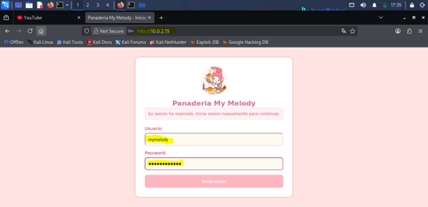
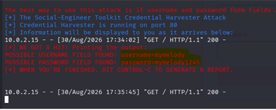
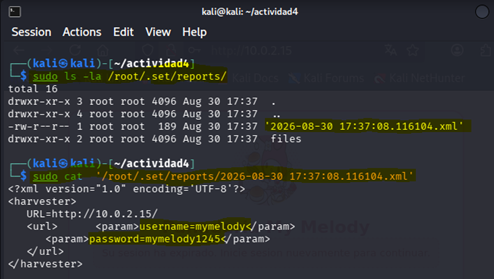

De la teoría a la práctica: walkthrough en acción
Introducción
Este proyecto tiene como objetivo demostrar la capacidad de aplicar conocimientos teóricos de seguridad informática en un entorno práctico, mediante la realización de un walkthrough detallado y la explicación de las técnicas y metodologías utilizadas para vulnerar una máquina virtual. A través de este ejercicio, se busca consolidar la comprensión de los conceptos aprendidos durante el curso y evidenciar la habilidad para identificar y explotar vulnerabilidades en sistemas informáticos.
Objetivo
Demostrar la capacidad de aplicar conocimientos teóricos de seguridad informática en un entorno práctico, mediante la realización de un walkthrough detallado y la explicación de las técnicas y metodologías utilizadas para vulnerar una máquina virtual.
Descripción del escenario
Panadería My Melody es una franquicia multinacional con infraestructura tecnológica centralizada. El área de seguridad identificó una campaña activa de suplantación de identidad (phishing) donde atacantes envían mensajes falsos indicando: "Su sesión ha expirado. Inicie sesión nuevamente para continuar."
El enlace redirige a los empleados a un portal ficticio que suplanta la identidad visual de la empresa y recolecta credenciales mediante Credential Harvesting a través de Social-Engineer Toolkit (SET).
Configuración del laboratorio
Evidencias y descripción del funcionamiento


http://10.0.2.15/).

/root/.set/reports/.Flujo del ataque
El flujo del ataque de phishing mediante SET se puede resumir en los siguientes pasos:

Controles de seguridad y mitigación
Para contrarrestar campañas de phishing y la captura de credenciales por servidores de suplantación, se proponen las siguientes medidas defensivas:
- Autenticación Multifactor (MFA FIDO2 / WebAuthn): El uso de llaves físicas de seguridad inmuniza contra portales clonados, ya que la llave valida el nombre de dominio legítimo antes de firmar.
- Filtros de correo y autenticación (SPF, DKIM, DMARC): Bloquean el vector de entrada impidiendo que los correos suplantados lleguen a la bandeja de entrada.
- Gestores de contraseñas corporativos: Los gestores no autocompletan datos si la URL en la barra de direcciones no coincide exactamente con el dominio registrado.
- Capacitación y concientización: Entrenamiento continuo a empleados para detectar incoherencias estéticas, uso de direcciones IP directas y falta de certificados TLS.
- Inspección de TLS y filtros de ULRs en Gateway:Bloqueo perimetral de dominios no categorizados o IPs directas, impide que las estaciones de trabajo locales establezcan conexiones hacia servidores maliciosos
Conclusión
La ejecución de este laboratorio demostró lo accesible que resulta replicar interfaces corporativas para interceptar credenciales en texto plano sin necesidad de vulnerar servidores ni descifrar algoritmos de cifrado. Se constató que la seguridad de una organización no puede depender únicamente del criterio visual del usuario para detectar fraudes, ya que el engaño explota directamente la confianza y la urgencia. En consecuencia, resulta indispensable implementar un esquema de defensa en profundidad que combine la concientización continua del personal con controles técnicos avanzados, tales como la autenticación multifactor (MFA) resistente a phishing y el uso estricto de protocolos cifrados (HTTPS/TLS).
Documentación de la práctica (PDF)
Puedes consultar el reporte completo de la práctica directamente a continuación o descargarlo en tu dispositivo: